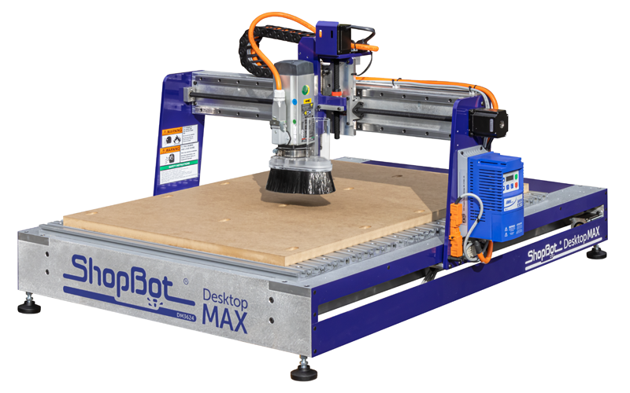
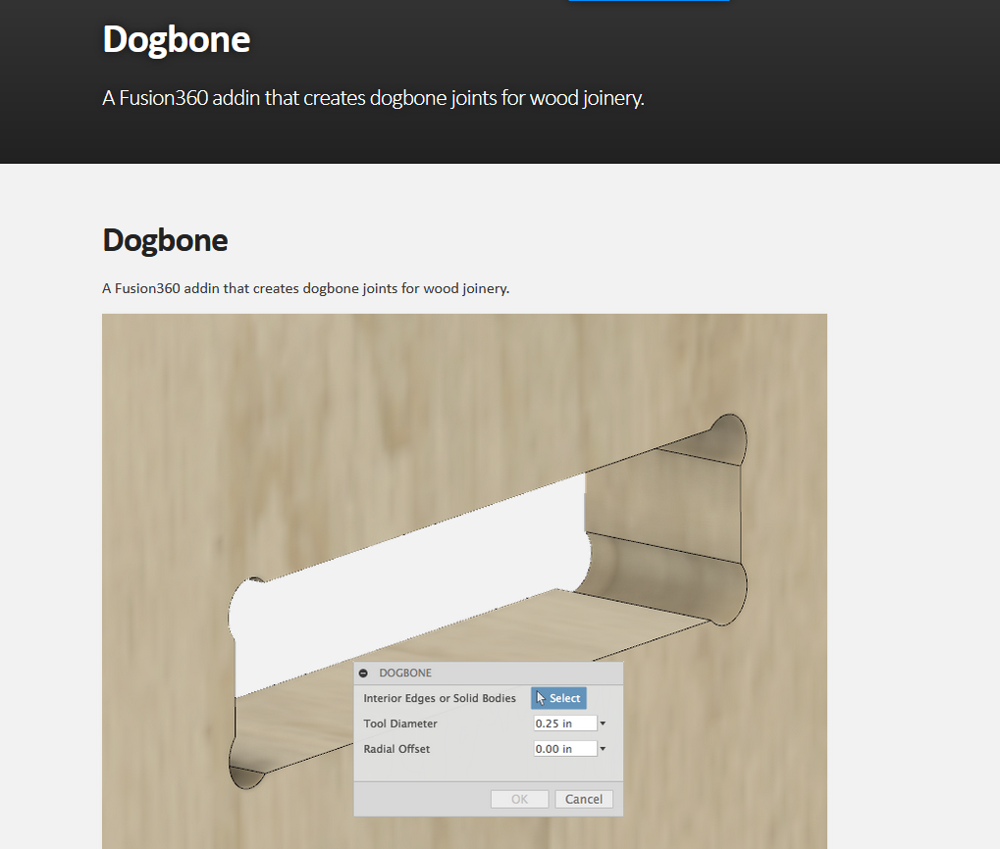
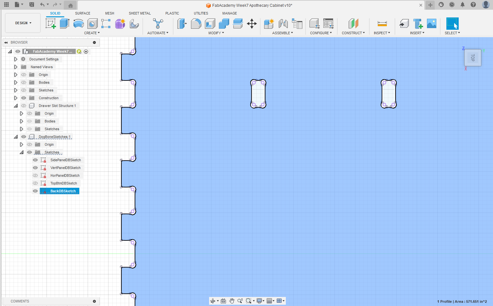
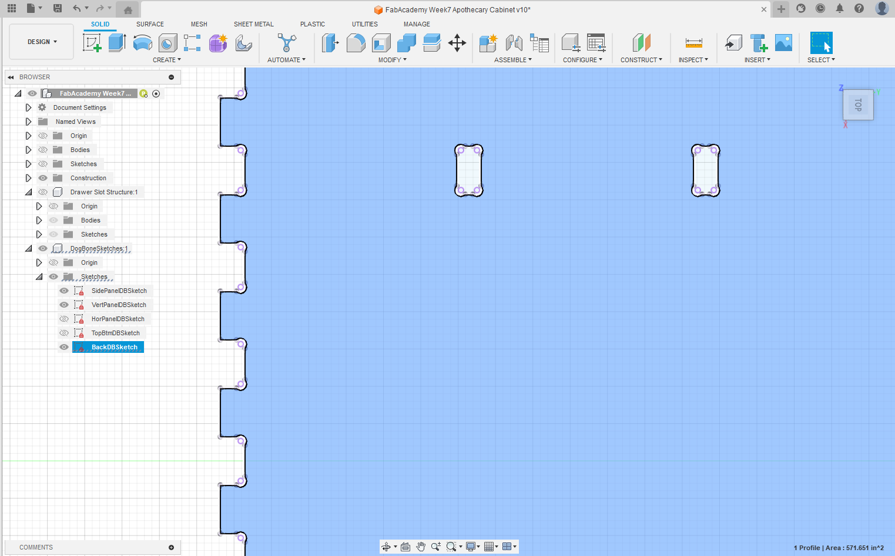
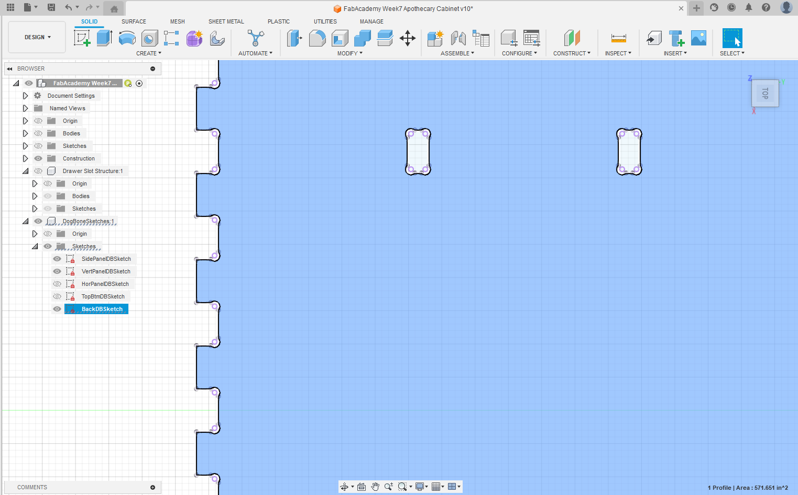

Test runout, alignment, fixturing, speeds, feeds, materials and toolpaths for your machine
Indivudual Assignment
Make (design+mill+assemble) something big
Group Assignment
The first thing to do was to take the safety training for the lab. Since we provide the training ourselves we followed a simple OSHA training for the CNC machine. This video is a good summary of the training.
But there are a few sparknotes for the program:
Wear Eye protection, goggles that cover the side of your eyes too
Wear hearing protection, rated to the sounds of your machine
Wear closed toed shoes
Do not wear anything on your wrists or loose clothing (ties etc)
Be trained on the use of your machine, and only use machines you are trained on
Stay near the machine
Be aware of the cutting and use the emergency stop if needed.
Once that training was completed then it was time to test the machines.
The Shopbot Desktop MAX

In general I was using this machine here. A smaller CNC it is a great tool for cutting smaller projects and surprisingly robust.
As a toolhead, in general, I was using a 1/4in flat end mill. This leads to very consistent cuts and has not failed me in past projects.
Using this device started the same every time. Before the machine was set up I ran an x/y zero routine that boxed the machine properly and then levelled the z axis using the plate and clamp method attached.
The machine works best with the 1/4 in bit cutting externally to designs instead of internally.
The suction is somewhat lacking and wearing breathing protection is very encouraged and we decided to upgrade our dust collection after this.
Toolpath set up is easy if you have a dxf file
The machine comes with VCarve pro. And it is used to preset for the device. As long as you precisely measure the thickness of your wood you have an easier time with the milling of the projects.
This program exports an .sbp file and that is what is uploaded into the comptuer that is running the Shopbot software. Normal it runs each toolpath several times and can cut totally through the board, leaving tabs if you wanted.
Aside from other issues it is very easy to get this working and running.
The frame of an apothecary cabinet
I am sure that like all makers I have way too many small parts. Small parts everywhere and I thought what would be a good and elegant way of storing this? Using the standard plastic cubbies is not so aesthetically pleasing, so I wanted to try my hand at building a start for an apothecary's cabinet. Basically a set of cubbies.
The workflow for this is simple, or well I chose a workflow simple to me:
Design Cubby on Fusion 360
Export dxf files
Upload into Vcarve
Create toolpaths and export from VCarve as an .sbp
Cut
Assemble and Enjoy
In designing this I was limited by the size of my CNC machine, which has a 24x36 inch bed. So with this in mind I chose to create a design that is about 34x20 inches in its largest dimension. This would be the back of the cabinet.
Fusion 360
I will not take you step by step through the design of this but in essence the Fusion file was created by making one of each board and repeating it in patterns until I got the design I wanted.
The final cabinet will look something like this:
Dogbones
A dogbone in cnc is a small slot cut into the corners of teeth to join different parts together. They look something like the image below and make it a lot easier to push the pieces in because they remove any incongruencies in the size of the hole.
The problem is, you have to do this to every single tab you have in your design. And if you did overkill like I did, that is a lot of tabs. So I had to find a way to add dogbones more easily. This was remedied by using a quick google and finding that a dogbone add-in already was made for Fusion 360.

Installation is pretty simple and just follows a few steps in this website:
Once that is in the system you very easily pull up the addins menu in Fusion, and run the addin to get it to add all the dogbones to your sketches. In my fusion file what I did was create a new component that holds all the dogboned sketches to make it a bit more organized and easier to find

As you can see clearly in this image, the add-in automatically adds a dogbone structure to each corner. The only thing that you do have to make sure to do is that any part that is in need of the dogbones will be on the xy plane of fusion. It is the limitation of the Dogbone add-in and leaves a messy final drawing in fusion. But it is so much better than doing all of them manually.
Setting up Toolpaths
The next step takes us straight to VCarve pro. Where you have to upload and create the toolpaths for each of the dxfs you created. In my case I had 5 dxfs since the designs are repeated. I have the top/bottom, the vertical shelves, horizonal shelves, side walls, and back.
I arranged these into the fewest workplanes that I could
For example in this image I set up three vertical shelves to be able to have the amount that I needed. The vertical shelves were shorter so I was able to fit more on one board.
It was very important to set a plunge depth that was appropriate for the wood and bit I had. I tend to do a little overkill and go into the spoilboard just to make sure I have a full cut
Once I exported the toolpaths, it was onto the machine
Cutting the sides
This was a very repetitive process that started with zeroing the machine and fastening the wood using the clamps we have that attach to the aluminum rails:
Then it was uploading the toolpaths on the control computer and running the cuts
Construction
At this point I ran out of wood so I decided to put together the parts that I had and it looked something like this:
The help of a blow hammer and a 2x4 chunk to help distribute the force was the best thing that happened with the construction of this. Because of this I learned that I possibly had too little clearance for the construction of the device on the cnc and should have given myself a fraction of an inch of clearance so that things could slide in more easily.
However, I do like the tight fit that I had in this system once they were hammered in the pieces did not and would not budge one bit.
I had to do a lot of post processing and sanding. Once I finished my design it ended up something like this:
I decided to remove one shelf to have a bit more room in the middle but I love how it came out. Now I am using it as storage at work and will probably make another better one soon!
.jpeg)
.jpeg)
.jpeg)

.jpeg) 


.jpeg)
.jpeg)
.jpeg)
.jpeg)
.jpeg)
.jpeg)

.jpeg)
.jpeg)